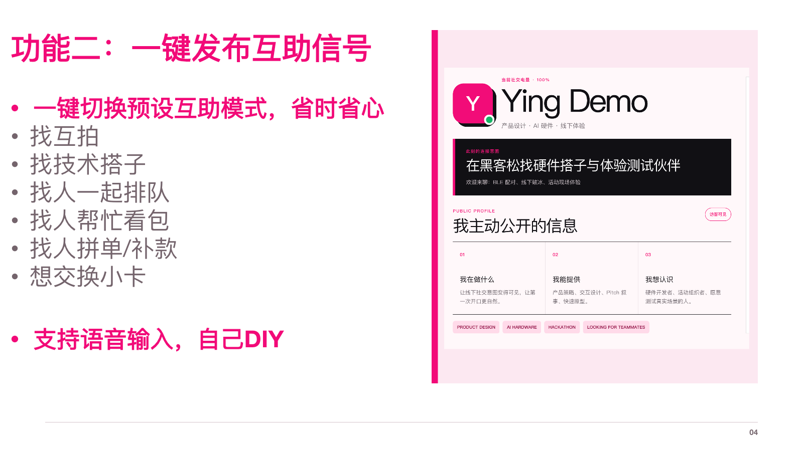

浙才私域销售实习生
累计成交 180 名付费学员，贡献 70 万元以上营收；通过需求追问、产品讲解和异议处理推进成交。

§ 01 · EXPERIENCE
累计成交 180 名付费学员，贡献 70 万元以上营收；通过需求追问、产品讲解和异议处理推进成交。
评估大模型真实问答，归纳典型 Bad Case，并提交可以复核的结构化反馈。
参与职业认知课程的宣传、咨询与销售，招募 6 名学员，创收 1.9K 元。
§ 02 · CORE PROJECT
从养花负担出发，把再生塑料自浇水花盆、植物养护与回收入口组织成一套可讲解、可演示的方案。
01 / USER PROBLEM
方案围绕三个真实使用问题展开：经常忘记浇水、难以判断浇水量，以及短期离家时无人照看植物。
02 / PRODUCT
产品结构页同时呈现水仓余量、导水方式和拆洗路径，用于说明产品如何工作。
03 / DIGITAL EXPERIENCE
小程序原型包含植物养护、社区交流和回收入口。我负责方案内容、页面逻辑、前端 Demo 与 PPT 材料。
§ 03 · OTHER PROJECTS
PROJECT 02
方案从识别障碍扩展到出行端、家属端和治理端。出行者获得实时提醒，家属了解行程，治理人员承接事件处置。


PROJECT 03
方案包含社交状态表达、一键互助、碰一碰连接和 AI 交流复盘。我的工作集中在软件侧方案，并与硬件成员完成连接。




§ 04 · CONTACT